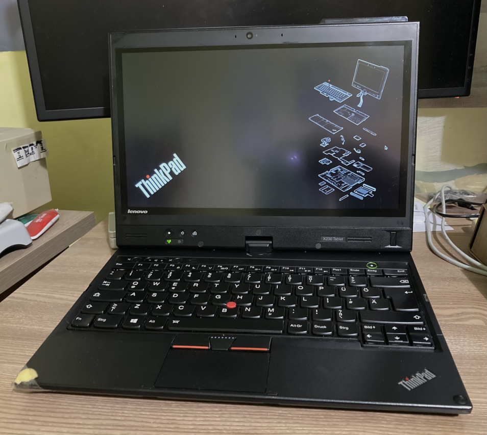

|  | CPU: Intel Core i5-3320M 2.60 GHzMemory: 8 GB DDR3Storage: 480 GB SSDGPU: Intel HD Graphics 4000OS: Void LinuxKeyboard Layout: German QWERTYCondition: Working perfectly |
The seller said it has a 256 GB SSD but when I turned it out it booted very slow and I could hear a drive so I assumed he mixed it up. Gotta say I was really surprised when I opened it up and saw a 2 TB drive...
Upgraded HDD to SSD, currently running Void Linux. It's still a really nice and fast machine for 2023. I use it almost daily
Update 14/05/2024 - Two of my keycaps broke off so I bought a parts keyboard and replaced them along with a new scissor mechanism for one of them. I also transferred the fingerprint reader with the part of the frame it's attached to from my old X220T's display assembly. Everything now works perfectly.